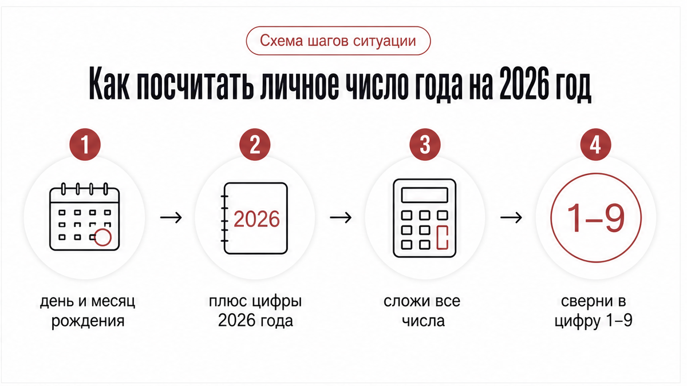
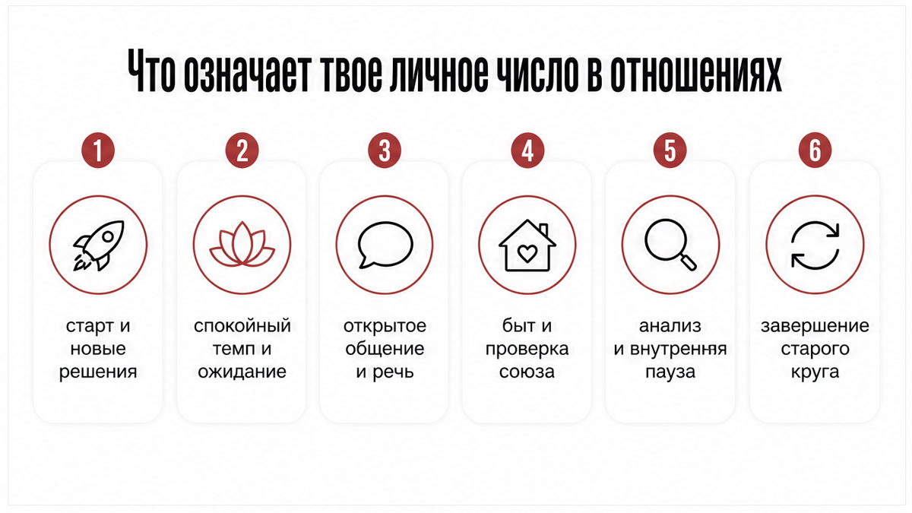
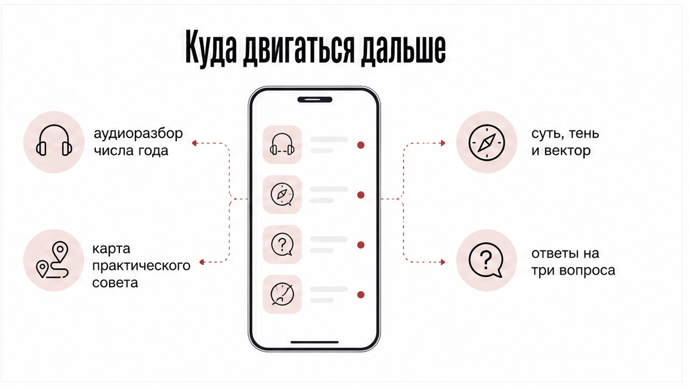

Конец августа, дневная духота и открытое настежь окно на кухне. На столе лежит листок бумаги с ручкой, а в телефоне открыты пустые заметки. Последние месяцы ты по кругу возвращаешься к одной истории: ждешь шага, пишешь первой, считаешь дни между ответами.
Ты крутишь одно лето: ждешь шаг, пишешь первой и считаешь дни тишины. Личное число года покажет твой собственный ритм в отношениях на эти двенадцать месяцев. Дальше можно сразу спросить карты или послушать, как это число садится в твою ситуацию.
Скопируй в расклад один из вопросов:
Чтобы услышать, как число года раскрывается в твоих отношениях, открой аудиоразбор «Суть – Тень – Вектор» в приложении во ВКонтакте или в приложении Макс. Там эта структура, дополнительная карта практического совета и уточняющие вопросы.
Если нужны карты на эти вопросы, открой бот в Макс: три бесплатных расклада, ответ голосом или текстом, быстрый триплет из трех карт или глубокий кельтский крест из десяти.
Голова пытается разгадать чужой характер и объяснить чужую тишину. В такой тревоге легко растратить все силы на чужие поступки. Но вместо попыток угадать чужие мысли проще остановиться и посчитать свой собственный ритм.
Личное число года показывает твой персональный ритм на эти двенадцать месяцев. Такой расчет отличается от сравнения двух дат и не пытается предсказать каждый шаг наперед. Цифра помогает увидеть, куда сейчас идут твои силы: в новый старт, спокойное ожидание, бытовой порядок или завершение старого этапа.

Для расчета нужны только день и месяц твоего рождения, а также цифры текущего календарного года. Год рождения здесь не складывают. Полное число судьбы отвечает за весь жизненный путь, а личный год описывает конкретный отрезок времени.
Универсальное число 2026 года для всех равно единице: 2 + 0 + 2 + 6 = 10, а 1 + 0 = 1. Чтобы узнать свое число, сложи все цифры дня и месяца рождения с цифрами 2026 года и сведи сумму к однозначной цифре от 1 до 9.
Вот примеры расчета:
В нумерологии есть два подхода: классический считает цикл по календарному году с января по декабрь, а часть школ ведет отсчет со дня рождения. В конце лета мы уже плотно проживаем ритм 2026 года, а смена личных циклов происходит плавно.
Август добавляет общий сезонный фон: единица года вместе с восьмым месяцем дает девятку (1 + 8 = 9). Это фон завершения лета и подведения итогов для всех, но твой личный ритм остается ведущим.

Личное число года не предсказывает точные события и не дает гарантий, придет ли сообщение в конкретный час. Оно показывает общий темп периода и помогает принимать спокойные решения. Найди свою цифру в списке.
Единица открывает новый девятилетний круг. Наступает время для личной инициативы, пересмотра старых договоренностей и самостоятельного выбора.
Ловушка года – по привычке ждать первого шага от партнера и терпеть неопределенность. Если союз зашел в тупик, важно не держаться за отжившее, а прямо определить свой курс и начать движение вперед.
Двойка требует замедления, мягкости и терпения. Этот период не терпит ультиматумов, резких обрывов связи и спешки.
Ловушка ума – требовать ясности силой и давить на партнера в надежде ускорить события. Год благоприятен для спокойного диалога, договоренностей и восстановления контакта, если оба готовы идти навстречу.
Тройка приносит жажду живого общения, ярких эмоций и открытого проявления чувств. Хочется делиться мыслями и быть услышанной.
Главная ловушка – распылить внимание на десятки переписок или крутить в голове монологи вместо прямого разговора. Важно вслух называть свои желания и говорить о том, что для тебя ценно.
Четверка переносит внимание на практическую основу союза. Наступает время укреплять фундамент: решать вопросы с жильем, бытом и долгосрочными обязательствами.
Ловушка – ждать романтической сказки и обижаться на бытовую рутину. Результат формируется постепенно через терпеливую совместную работу и надежность.
Пятерка приносит тягу к поездкам, новым лицам и смене привычной обстановки. Возникает острое желание встряхнуть повседневность и сбросить скуку.
Ловушка – поддаться импульсу, разорвать устойчивые связи на эмоциях и перевернуть всю жизнь за один день. Важно впускать новизну осознанно и беречь внутренний баланс.
Шестерка направляет силы на дом, семью и взаимную заботу. Период подходит для укрепления союза, создания уюта и выхода на новый уровень близости.
Ловушка года – раствориться в проблемах партнера или начать контролировать каждый его шаг из тревоги. Отношения крепнут, когда забота идет без давления и с уважением к личным границам.
Семерка приглашает к честному самоанализу и тишине. В этот период полезно снизить внешнюю суету и трезво оценить, насколько ты счастлива рядом с человеком.
Ловушка ума – бесконечно караулить реакции партнера и искать подтверждение своей ценности снаружи. Чем меньше суеты и попыток выбить внимание, тем быстрее возвращается внутренний покой.
Восьмерка требует взрослого взгляда на факты и последствия выборов. В союзе на первый план выходят реальные поступки, а не красивые слова.
Ловушка – верить пустым обещаниям и закрывать глаза на отсутствие дел. Это время подведения промежуточных итогов и принятия зрелых решений о будущем отношений.
Девятка закрывает девятилетний круг. Наступает пора отпустить старые обиды, прояснить зависшие вопросы и освободить место для нового этапа.
Ловушка – судорожно держаться за исчерпавшие себя связи из страха перемен. Важно спокойно подвести итоги и не тащить груз прошлых разочарований в следующий цикл.

Сложить цифры и узнать число года – только половина дела. Сама по себе цифра не объяснит, почему человек держит дистанцию и как сейчас вести себя в диалоге, если просто крутить её в голове.
Чтобы услышать детальный разбор своего ритма, открой аудиоразбор «Суть – Тень – Вектор» в приложении во ВКонтакте или в приложении Макс. Там тебя ждут разбор скрытых причин происходящего, карта практического совета и уточняющие вопросы под твою ситуацию.
Если хочешь разложить ситуацию на картах и получить ясный ответ без долгих ожиданий, переходи в бот в Макс. Там доступны три бесплатных расклада: можно задать вопрос голосом или текстом, выбрать быстрый триплет или подробный кельтский крест.